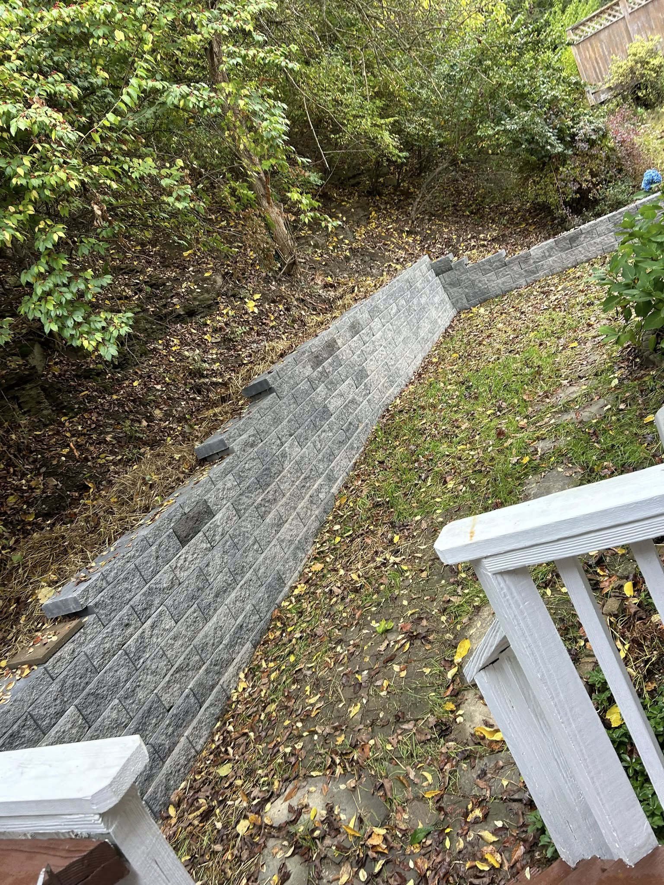
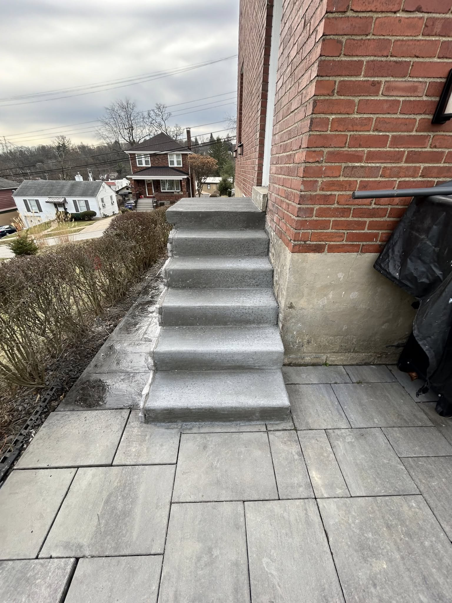
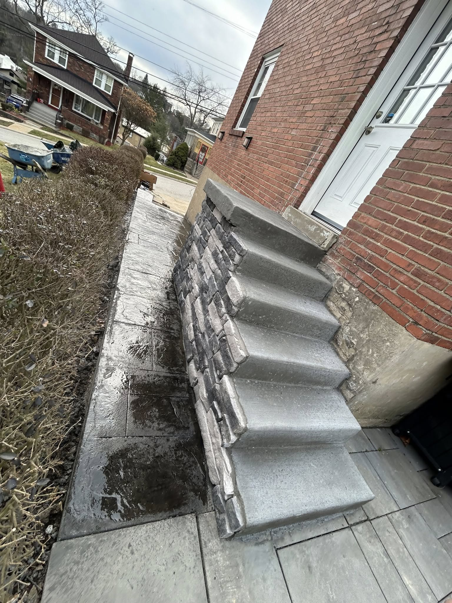
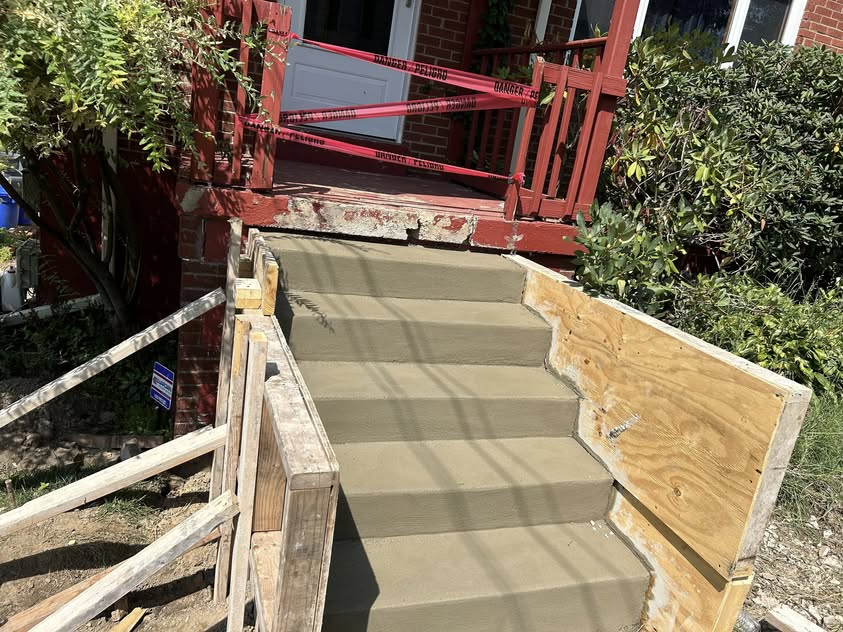
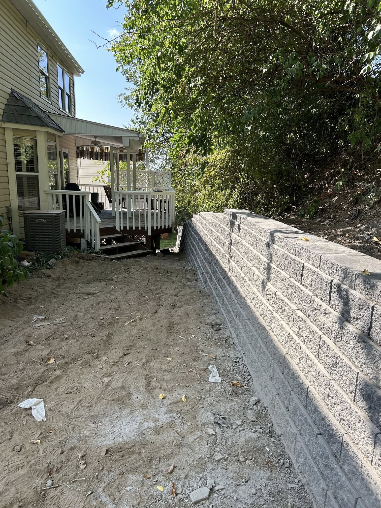
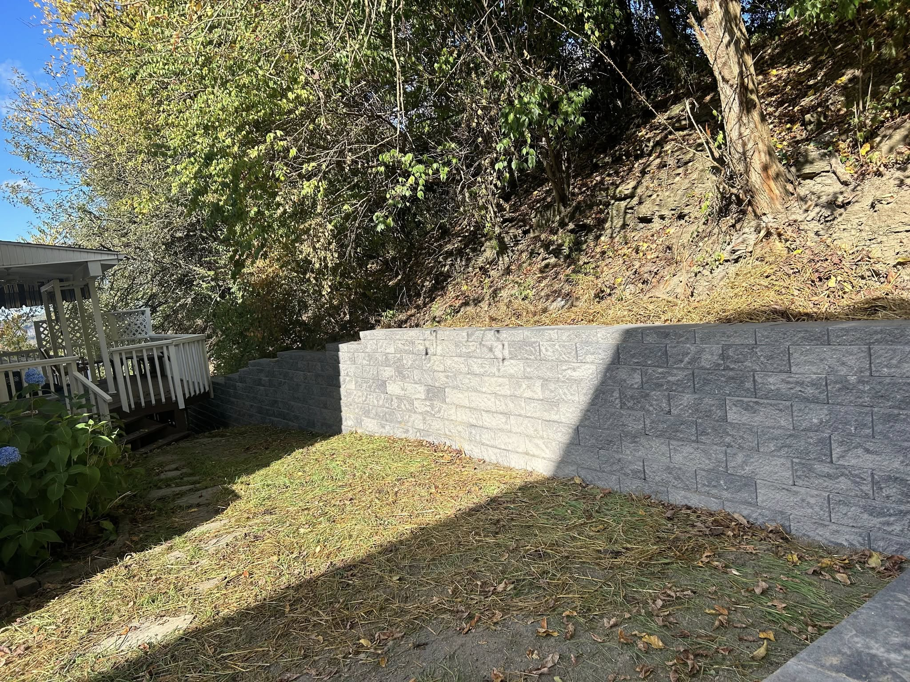
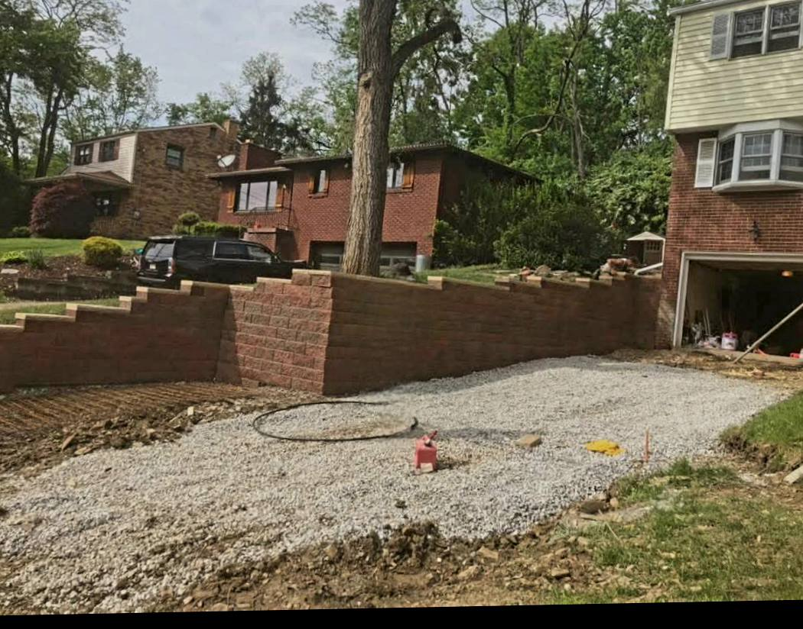

Engineered for strength. Built for the Irwin terrain.

In Westmoreland County, a level yard is a luxury. We specialize in structural retaining walls and integrated steps that turn steep slopes into usable, beautiful outdoor spaces. Using heavy-duty segmental blocks and precision leveling, we build walls that stand the test of time.





